A Avaliação Fullmotion são 60 minutos com um fisioterapeuta especialista. Você sai sabendo a causa, não só onde dói, e com um plano na mão. Mesmo que decida não tratar com a gente.
Se você se identifica com um ou mais pontos abaixo, é hora de investigar a causa.
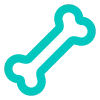
Dor na coluna, lombar ou cervical que sempre volta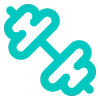
Dor ao pegar o filho no colo ou em tarefas simples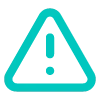
Medo de fazer exercício e piorar a dor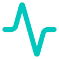
Postura alterada e desconforto frequente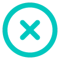
Limitação de movimento no dia a dia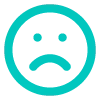
Sensação de rigidez, travamento ou instabilidade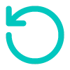
Dor que melhora e depois volta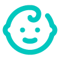
Já fez fisioterapia, pilates ou academia sem resultado que dureCada mês compensando o movimento errado é um mês a mais de tratamento depois.
Marcar minha avaliaçãoSe a dor volta, ela não foi resolvida. Foi silenciada. A diferença entre aliviar e resolver está em tratar a causa.
| Como costuma ser | Método Fullmotion | |
|---|---|---|
| Quando a dor aparece | Trata onde dói | Procura o que causou |
| Na sessão | Você deita e recebe | Você se move e conduz |
| O que é sucesso | Sair sem dor hoje | Não precisar voltar |
| Na alta | Fim do atendimento | Começo da autonomia |
Você reaprende a se mover. Não fica parado numa maca.
Do início ao fim do tratamento. Nunca repassado para estagiário.
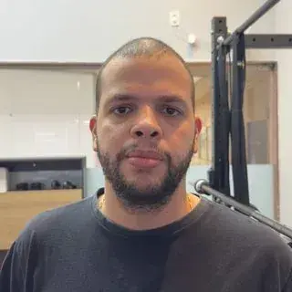
Fabrício QuintanilhaCEO e FisioterapeutaCREFITO-2 410684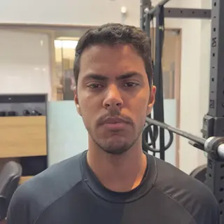
Ryan Cesar RodriguesFisioterapeutaCREFITO-2 414840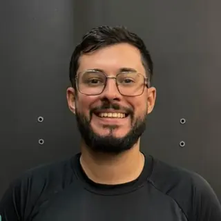
Felipe Vieira Serra de SouzaFisioterapeutaCREFITO-2 412929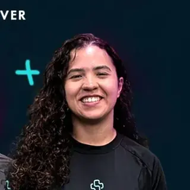
Larissa FernandesFisioterapeutaCREFITO-2 370293Tenho 62 anos e amo a corrida de rua. A Fullmotion me acompanha para eu continuar correndo com segurança e sem dor. Atendimento e estrutura impecáveis.
Verônica TostesCheguei com muita dificuldade de andar e, com poucas sessões, já ando bem melhor. As dores diminuíram bastante. Experiência maravilhosa.
Carmem MonteiroA Fullmotion vai muito além do que propõe. Aqui você se sente bem cuidado de verdade. Eles são sensacionais.
Ronaldo MoroDecide depois de entender o próprio corpo.
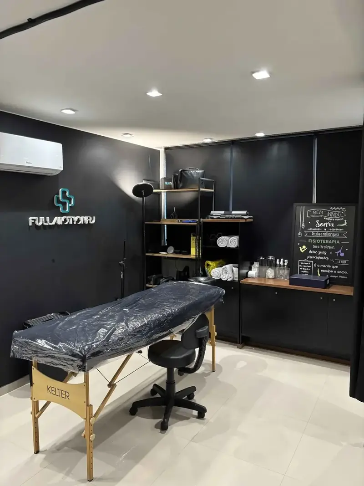
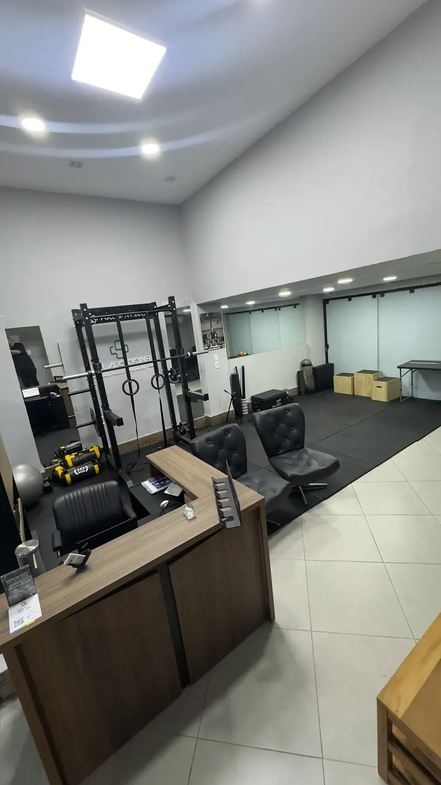
Não. É fisioterapia com movimento ativo, conduzida por fisioterapeuta, focada em achar e tratar a causa da dor.
São 60 minutos de avaliação funcional completa, sem pressa, com um fisioterapeuta especialista. Investigamos histórico, postura, movimento e função, e você sai com um plano claro. A avaliação é paga e abate integralmente no seu plano de tratamento.
Não. Você pode marcar direto. Se identificarmos necessidade de exame ou acompanhamento médico, orientamos o caminho.
Não. O atendimento é particular, e é isso que garante hora marcada, o mesmo fisioterapeuta do início ao fim e um plano sem limite imposto por operadora.
A avaliação define isso. A maioria dos planos trabalha com um ou dois atendimentos por semana, e a evolução é medida a cada encontro.
O plano é mensal e renovável, sem compromisso de longo prazo. Se fizer sentido pausar ou ajustar a frequência, a gente reavalia junto.